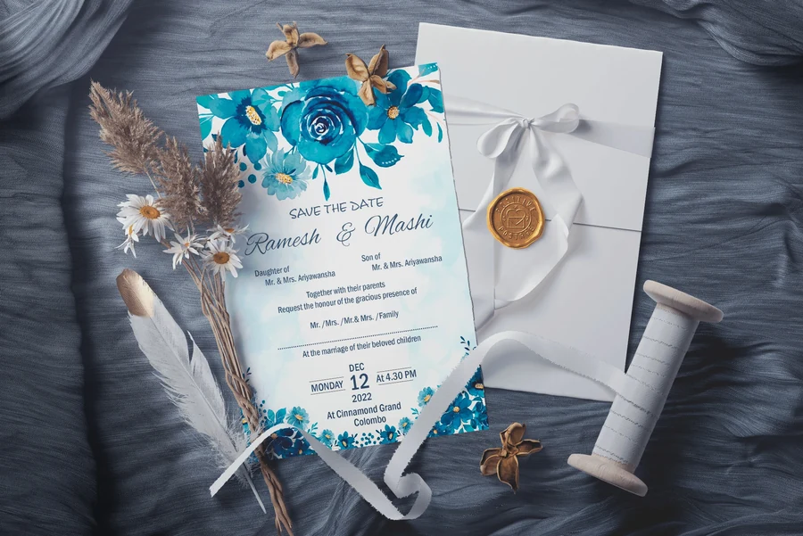
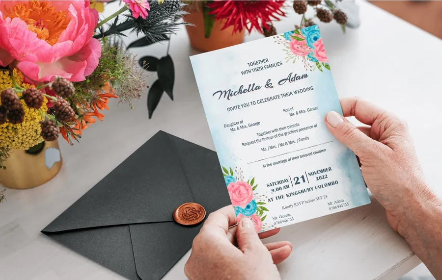
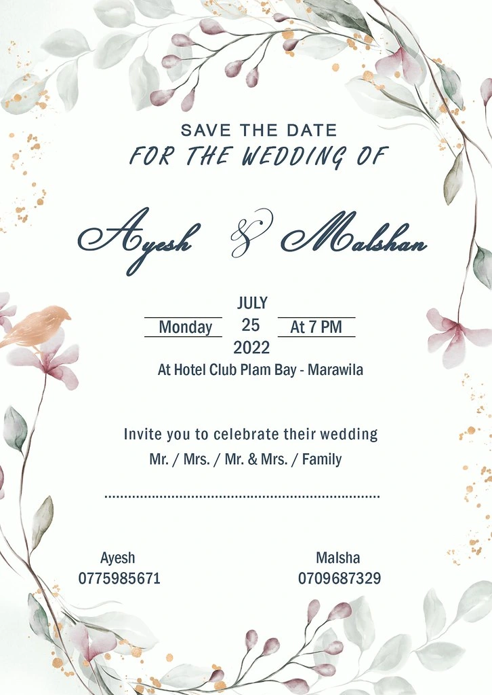
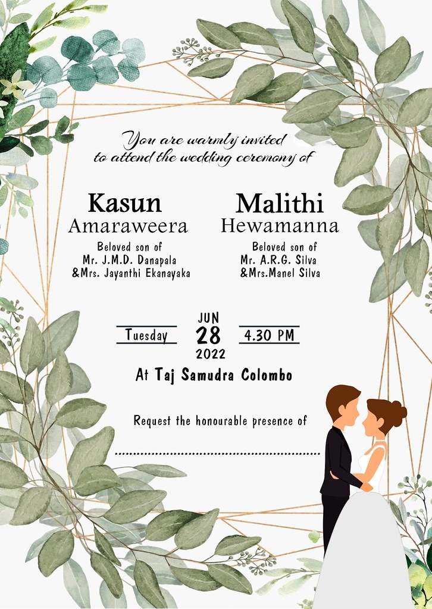
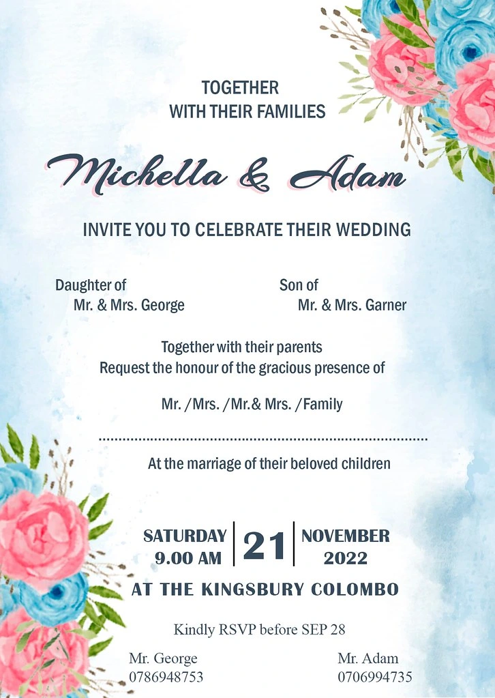
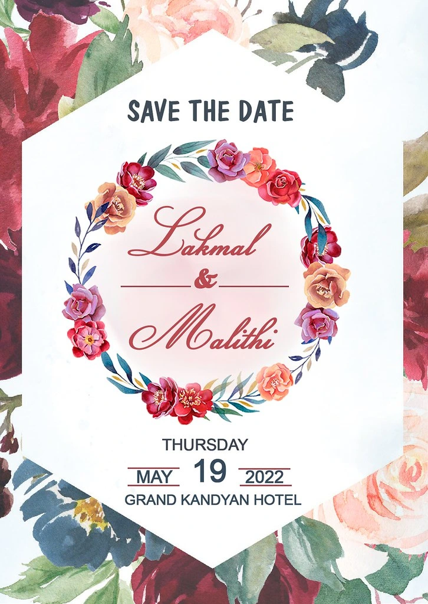
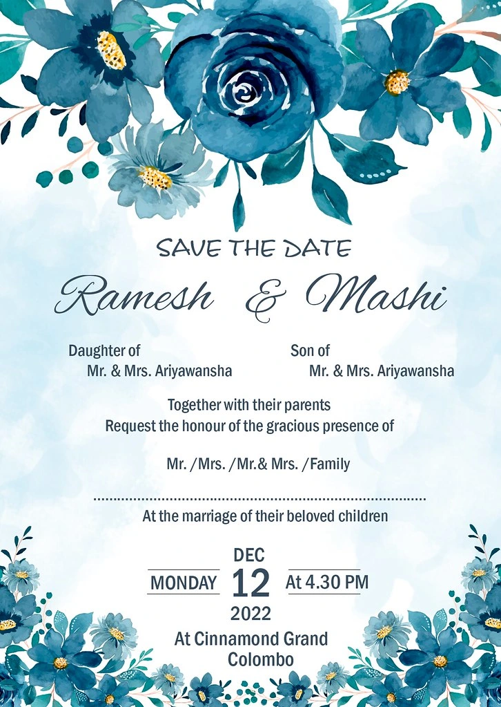

GRAPHIC DESIGN / 08
A personal occasion, beautifully told
Floral details and expressive typography bring a considered feel to wedding invitations.
Invitations · Print designTHE PROJECT
Wedding stationery collection
Invitation designs exploring different floral palettes and printed presentations. Each piece arranges the names, occasion, and event information into a composition that feels personal and easy to read.
MY DESIGN APPROACH
Botanical borders frame the content, while generous spacing allows the names to take priority. Script and simpler supporting typography create a contrast between the celebratory message and practical event details.
DESIGN OBJECTIVE
Give names and occasion priority while keeping the date, time and venue easy to locate.
Objective interpreted from the artwork; original customer brief not supplied.
COLOUR & CONTRAST
Related floral hues create harmony within each invitation. Darker text against pale centres protects the information hierarchy; pink, blue and green variants create distinct moods.







